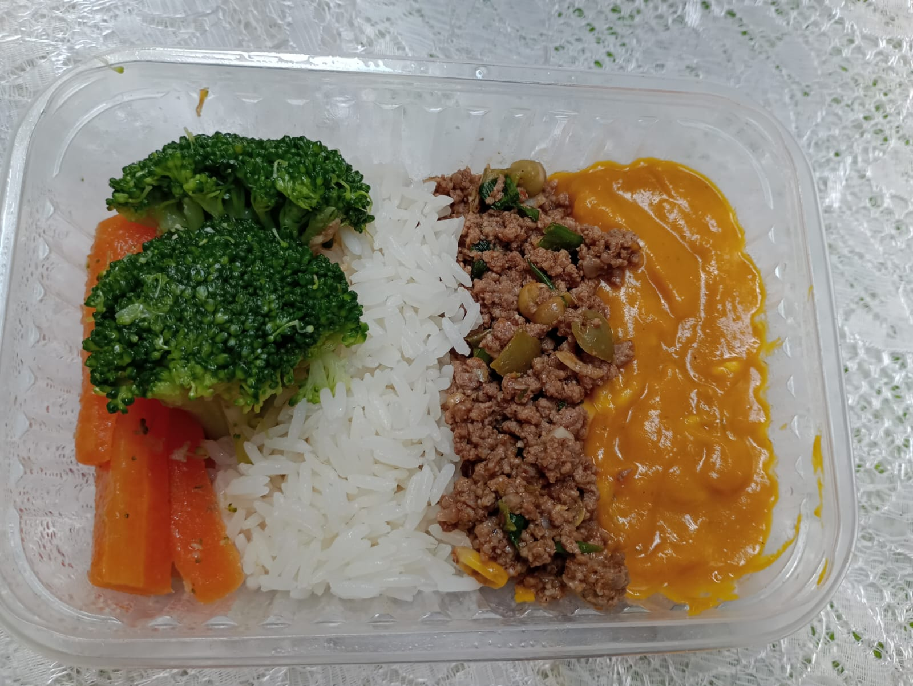

Patinho Moído
Patinho moído,com purê de abóbora com queijo, arroz e cenoura com brócolis.
Patinho moído,com purê de abóbora com queijo, arroz e cenoura com brócolis.
Escondidinho de batata doce e batata inglesa, recheio de frango ou de.carne.
Frango com quiabo, arroz e purê de batata.
Escondidinho de abóbora com queijo e recheio de carne moída.
Patinho moído, purê de batata doce e inglesa, cenoura e brócolis.
Suco Verde (maçã, couve, limão, hortelã e gengibre);
Suco Amarelo (manga, maçã,limão, hortelã);
O gosto por cozinhar vem de longa data, o desejo de trabalhar nesse ramo ficou latente mesmo enquanto eu trabalhava em lugares que não lidavam com comida. O ano de 2003 acendeu uma luz nesse túnel quando trabalhando no Hospital de minha cidade, fui para o setor de Nutrição, onde aprendi inúmeras coisas que estavam na verdade, por providência, me preparando para desafios futuros; foi muito aprendizado como uso correto de E.P.I's, boas práticas de manipulação de alimentos, o significado de contaminação cruzada e muitas outras competências importantes que me abriram um leque enorme de possibilidades.
O desemprego bateu em minha porta, mas foi prontamente confrontado com alguém, que sem se intimidar, iniciou uma produção caseira de bolos, salgados e sorvetes que tiveram grande aceitação, especialmente nas saídas de escolas.
O nome Marta Sabores de Vó foi uma homagem singela à minha avó, D. Adelaide, que era uma cozinheira de mão-cheia e muito organizada que trabalhava em uma fazenda do município Fluminense de Comendador Levy Gasparian - "Ah! Que fascínio me causava ver minha avó cozinhando na fazenda do Sr. Edmundo.". Outro importante passo dado foi quando resolvi fazer comida saudável, e me preparei através de um excelente curso com a Nutricionista Camile.